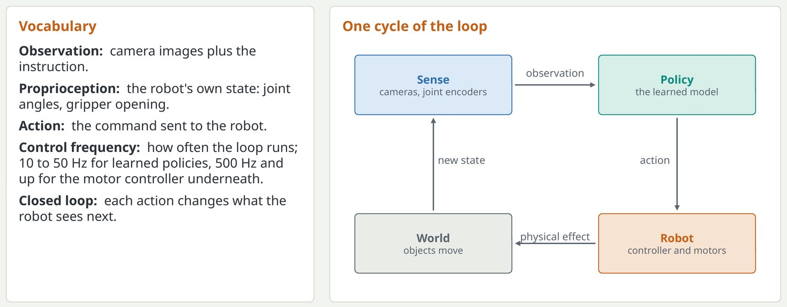
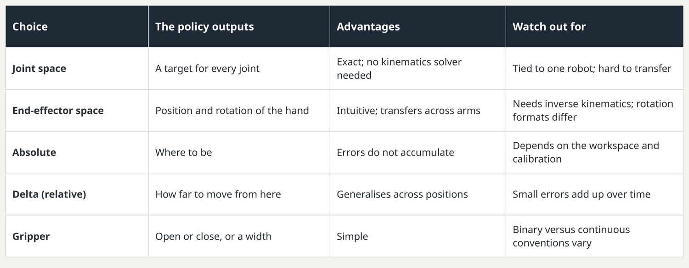
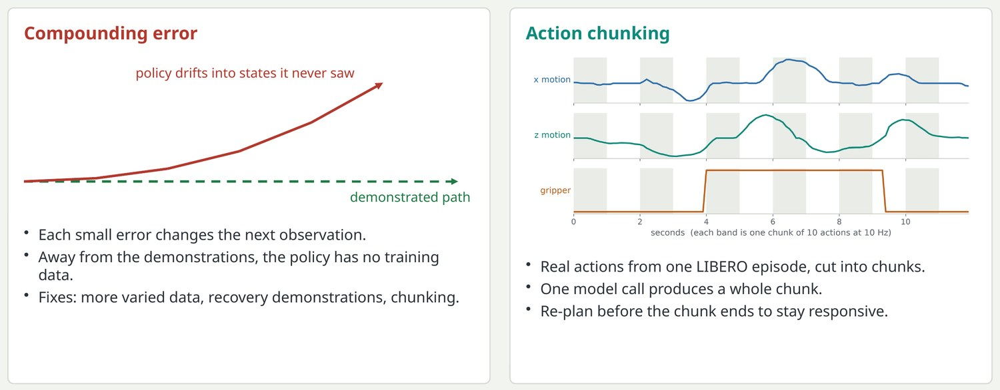
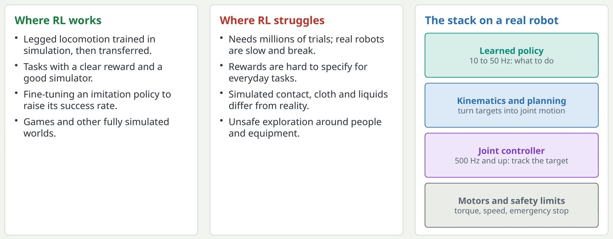

The control loop: what a robot policy actually does
A policy is a function from what the robot senses to what the robot should do next, called many times a second.

This is the most important conceptual shift for people coming from standard machine learning. In supervised learning, test inputs are independent of the model. In control, a small mistake moves the robot to a slightly different place, so the next observation is one the model may never have seen. Frequencies are typical values: learned policies run slowly and hand off to a fast classical controller.
Key pointUnlike a classifier, a policy's outputs change its own future inputs.
Action spaces: what exactly does the policy output?
The same motion can be commanded in several ways, and the choice affects learning and transfer.

A common real bug: a dataset records absolute joint positions, the policy is configured for delta end-effector actions, and nothing crashes. The robot just moves strangely. Rotation representation also matters: Euler angles, quaternions, axis-angle and six-dimensional representations are all in use. Normalising actions to a consistent range per dimension is standard.
Key pointBefore training on any dataset, find out which action space it uses; mixing them silently breaks a policy.
Imitation learning, compounding error and action chunking
The dominant way to teach robots today: show the task, then train the policy to copy the demonstrations.

Behaviour cloning is supervised learning: observation in, demonstrated action out. Its weakness is compounding error: the policy drifts into states that the demonstrations never visited, and it has no data on how to recover. Action chunking predicts a short sequence of future actions at once, for example the next 50 steps. That shortens the effective horizon, keeps motion smooth, and gives a slow model time to compute the next chunk.
Key pointPredicting a chunk of future actions, not one, is the simple trick that made imitation learning work.
Reinforcement learning and the classical layer underneath
Learned policies do not replace control engineering; they sit on top of it.

Reinforcement learning learns from trial and error using a reward signal. It needs enormous numbers of trials, so it works where a fast, accurate simulator exists: walking, running, balance. Manipulation with contact-rich objects is hard to simulate and rewards are hard to write, so imitation dominates there. In both cases the policy's output goes to classical components: inverse kinematics, a joint controller, safety limits.
Key pointImitation leads in manipulation, RL in locomotion, and classical control runs under both.